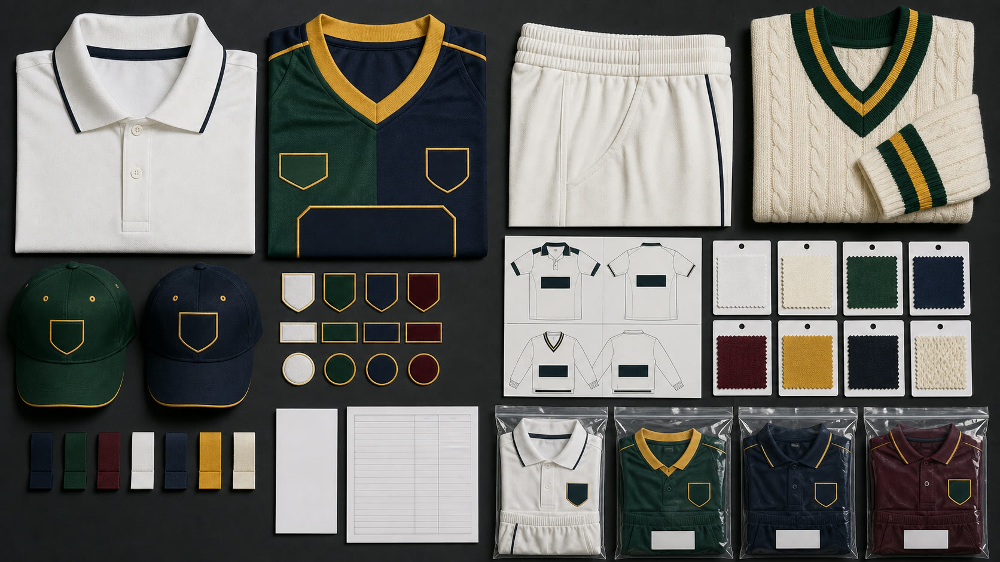

Whites, Colored Kits, and Training Pieces
- Traditional white shirts and trousers, colored short- or long-sleeve jerseys, training vests, and practice tops
- Define collar, placket, sleeve, trouser rise, waistband, pocket, sweater, vest, and cap requirements by format
- Record which garments are match, training, travel, supporter, or retail SKUs before requesting samples